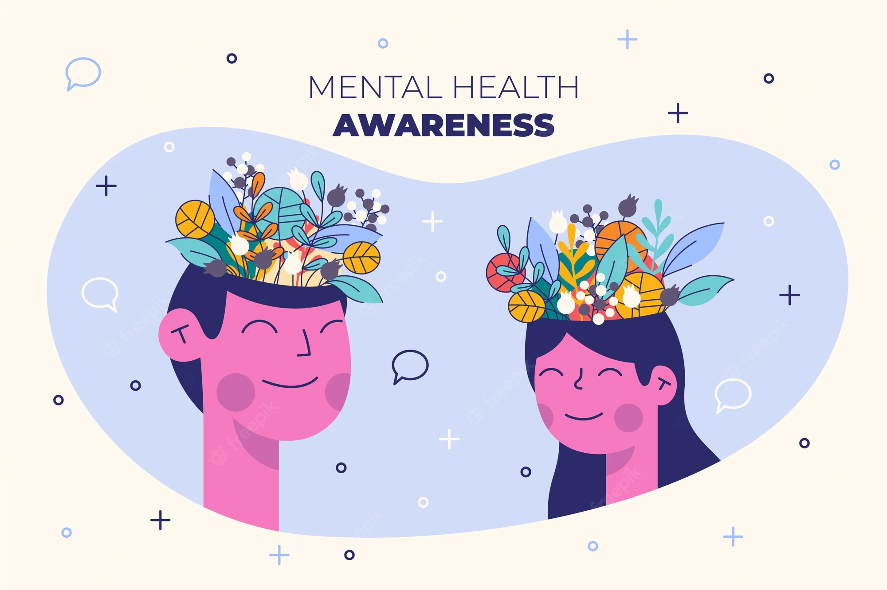

Mental health includes our emotional, psychological, and social well-being. It affects how we think, feel, and act. It also helps determine how we handle stress, relate to others, and make healthy choices. Mental health is important at every stage of life, from childhood and adolescence through adulthood.
Mental health is more important now than ever before; it impacts every area of our lives. The importance of good mental health ripples into everything we do, think, or say.
Mental health encompasses our psychological, emotional and social well-being. Meaning, it impacts how we feel, think and behave each day. Our mental health also contributes to our decision making process, how we cope with stress, and how we relate to others in our lives.
Maintaining a positive mental health and treating any mental health conditions is crucial to stabilizing constructive behaviors, emotions, and thoughts. Focusing on mental health care can increase productivity, enhance our self-image, and improve relationships.Nurturing mental health doesn’t just improve our daily functioning, but it can also help us control — or at least combat — some of the physical health problems directly linked to mental health conditions. For example, heart disease and stress are related, so managing stress might have a positive outcome on heart disease.
Beyond everything else we’ve already discussed, being mentally healthy can significantly impact our psychological, emotional, and social well-being. It directly affects how we feel and act on a daily basis. Mental health is a major factor when we make difficult choices, deal with stress, and relate to other people in our world.
Yet, mental health isn’t just something we can deal with once and then get over. It’s important in every stage of our life. From infancy all the way into adulthood — mental health is something we need to be cognizant of and handle with care.
By making a concerted effort to spread mental health awareness, we can work to de-stigmatize how we think about, approach, and identify mental health issues in our society.
Having those tough conversations and admitting there’s a problem means we can come up with a solution. We can start removing the shame and fear that’s often associated with topics surrounding mental health. Doing so can increase the likelihood of someone reaching out when they need help.
Asking for help is a sign of strength. Working together allows us to begin building a foundation that respects and honors the importance of good mental health.
Another benefit to focusing on mental health awareness is that it can make signs and symptoms of certain conditions more well-known. Early intervention is predictive of how successful mental health treatment will be for many conditions. The earlier someone is diagnosed and begins treatment, the more likely it is that they’ll be able to manage their condition and improve their mental health.
Try out these tip to take care of your Mental Health
Treat yourself with kindness and respect, and avoid self-criticism. Make time for your hobbies and favorite projects, or broaden your horizons. Do a daily crossword puzzle, plant a garden, take dance lessons, learn to play an instrument or become fluent in another language.
Taking care of yourself physically can improve your mental health. Be sure to:
Taking care of your physical health is also one of the major part on improving your mental health. For more information related to Physical Healh knowledge, Check out Physical Health
People with strong family or social connections are generally healthier than those who lack a support network. Make plans with supportive family members and friends, or seek out activities where you can meet new people, such as a club, class or support group.
Volunteer your time and energy to help someone else. You'll feel good about doing something tangible to help someone in need — and it's a great way to meet new people.
Like it or not, stress is a part of life. Practice good coping skills: Try One-Minute Stress Strategies, do Tai Chi, exercise, take a nature walk, play with your pet or try journal writing as a stress reducer. Also, remember to smile and see the humor in life. Research shows that laughter can boost your immune system, ease pain, relax your body and reduce stress.
Try meditating, Mindfulness and/or prayer. Relaxation exercises and prayer can improve your state of mind and outlook on life. In fact, research shows that meditation may help you feel calm and enhance the effects of therapy
Decide what you want to achieve academically, professionally and personally, and write down the steps you need to realize your goals. Aim high, but be realistic and don't over-schedule. You'll enjoy a tremendous sense of accomplishment and self-worth as you progress toward your goal.
Seeking help is a sign of strength — not a weakness. And it is important to remember that treatment is effective. People who get appropriate care can recover from mental illness and addiction and lead full, rewarding lives.